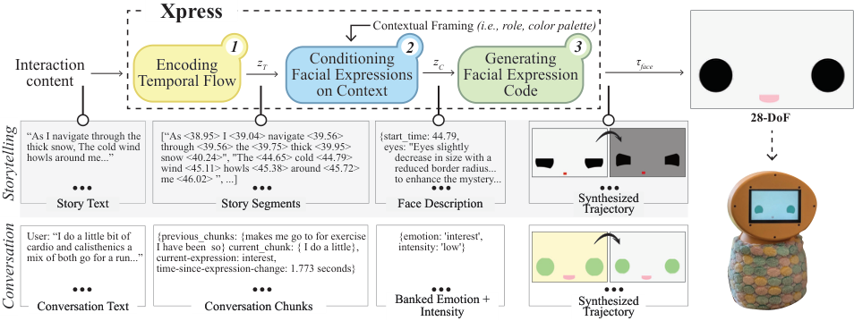
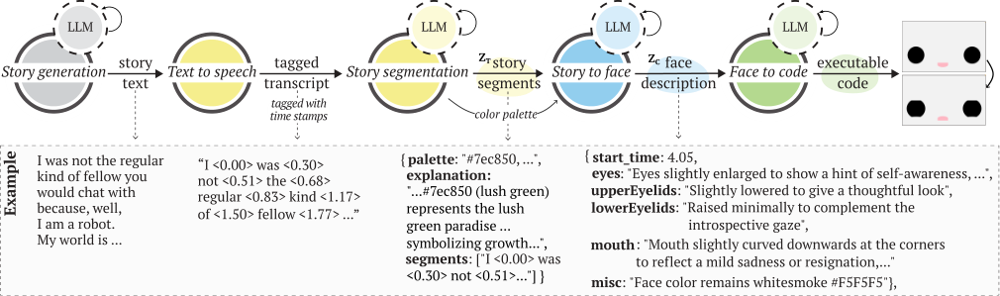
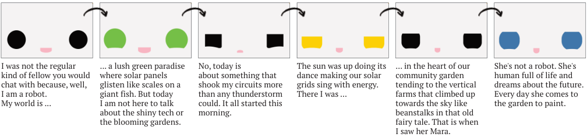
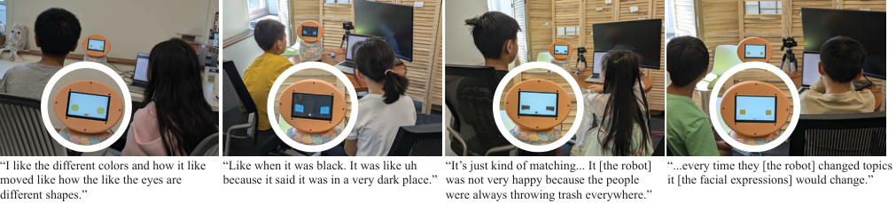
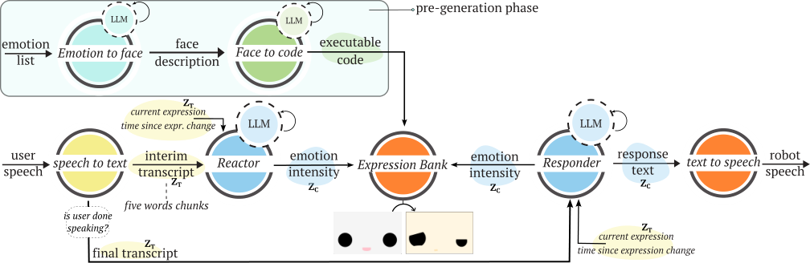
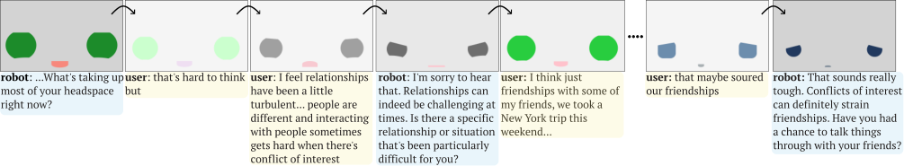

Studio / Xpress
Xpress
Xpress: A System For Dynamic, Context-Aware Robot Facial Expressions using Language Models
Victor Nikhil Antony, Maia Stiber, and Chien-Ming Huang
Facial expressions are vital in human communication and significantly influence outcomes in human-robot interaction (HRI), such as likeability, trust, and companionship. However, current methods for generating robotic facial expressions are often labor-intensive, lack adaptability across contexts and platforms, and have limited expressive ranges, leading to repetitive behaviors that reduce interaction quality.
We introduce Xpress, a system that leverages language models (LMs) to dynamically generate context-aware facial expressions for robots through a three-phase process: encoding temporal flow, conditioning expressions on context, and generating facial expression code. We demonstrated Xpress as a proof-of-concept through two user studies (n = 15 × 2) and a case study with children and parents (n = 13), in storytelling and conversational scenarios.
System overview
Xpress follows a three-phase process to generate context-aware facial expressions as a temporal trajectory, τface, which is conditioned on both the interaction content (e.g., robot speech, user speech) and socio-emotional context (e.g., tone, interaction background).
We use Xpress to generate facial expressions for a custom 28-DoF animated face, created to support a wide range of expressions while capturing the abstract nature of emotional communication. To animate it, a GPT-4 model, prompted to assume the role of a “creative and talented JavaScript programmer,” generates executable code tailored for the face system.

Encoding temporal flow
Xpress processes the interaction content to capture its temporal dependencies (e.g., timing, flow) and encodes this information into an intermediate representation zT.
Conditioning facial expressions on context
Xpress analyzes zT along with contextual framing information (e.g., role, previous interaction) and encodes the socio-emotional context as a high-level abstraction zC that defines the robot face, representing a spectrum of emotions beyond discrete categories.
Synthesizing the trajectory
zC is used to sequentially synthesize facial expressions that populate the expression trajectory τface, which can then be executed by a robot.
Storytelling system
We selected storytelling because it presents complex temporal and socio-emotional challenges: each story requires tailored expressions to ensure contextual appropriateness. We developed a storytelling system to showcase Xpress’s capability in generating context-aware facial expressions over varied socio-emotional context.

Story segmentation
An LM, prompted as an “expert, creative, and talented animator working at Disney,” segments the timestamped story transcript into chunks based on significant shifts in the narrative or emotional tone, and generates a color palette to complement each segment’s emotional tone.
Story to face
Another GPT-4 LM processes each story segment sequentially and generates detailed descriptions of facial expressions. Past expressions and contexts influence future ones, enabling a smooth emotional progression across the story.
Face to code
The code generation LM turns the face descriptions into face programs, producing a timestamped trajectory of facial expressions synchronized with the story’s delivery.
Pre-generated stories
To overcome the computational overhead (about 7 minutes for a 500-word story), we pre-generate facial expressions. During storytelling, the audio plays and a Node.js server triggers facial expressions based on the timestamps.

Storytelling study
Participants (n = 15) evaluated a robot telling 12 children’s stories across three genres: solarpunk, horror, and space adventure. The robot narrated three stories to each participant, one from each genre; participants then completed a survey and a semi-structured interview.
Context-awareness
Most participants stated that the expressions typically matched the expected emotions except for occasional discrepancies. Participants cited the intensity of the emotion as a reason for perceiving expressions as mismatched.
Expressiveness
Participants frequently commented on the diversity and range of the expressions. However, two participants struggled to associate the robot’s changing facial features, specifically the shifting shapes and colors, with emotions.
“the diversity of its expressions was very nice. I feel like I didn’t see too many repeats... It could show, I think, a wide range of emotion.”
A11, storytelling study
“Sometimes I felt that it didn’t match the emotions of the story, but like most of the time, it was spot on...”
A12, storytelling study
Storytelling with children
Storytelling robots have been proposed to foster cognitive and social growth in children. To evaluate Xpress within this target population, we conducted a case study with children (n = 8, ages 7 to 11) and parents (n = 5). The system narrated space adventure and solarpunk stories, and after the first story, children could choose to continue or stop listening.

Perception of facial expressions
Children responded positively to the robot’s facial expressions and were able to connect its changing expressions to the content of the stories. C5 observed, “sometimes [robot] was not very happy because the people were always throwing trash everywhere.”
Story preference and possible extensions
Each child listened to an average of two stories. Children envisioned using the robot for bedtime stories or to alleviate boredom, and wanted more interactivity; parents imagined their children creating stories with the robot.
Conversational system
To demonstrate Xpress in other interaction paradigms, we adapted it for real-time conversational interactions. We simplify the face description generation by outputting zC as discrete emotion-intensity pairings in Phase 2, and pre-generate an expression bank for Phase 3, lowering computation lag by pre-processing the most time-consuming step of Xpress.

Expression bank
An LM describes facial expressions for predefined emotions (e.g., happy, sad, surprise, calm), each with two intensity levels: low and high. The code generation model turns these descriptions into the bank.
Reactor
The user’s speech is transcribed in real-time and segmented into 5-word chunks. A GPT-4o-mini LM reacts with an appropriate emotion and intensity from the bank, or opts for no change to avoid frequent expression shifts.
Responder
Once the user finishes speaking, a GPT-4o LM generates the robot’s verbal reply and selects an emotion-intensity dyad for it, displayed for the first 3 seconds of the robot’s speech.
Real-time conversation study
To validate Xpress in real-time interactions, we conducted a study with a robot performing well-being check-ins with 15 participants through a set of questions. Three expression banks were generated, with one randomly selected for each interaction.

Context-awareness
Most participants felt that the robot’s expressions appropriately matched the content of the conversation. However, participants noted issues with the intensity of expressions, and expression timing influenced perception, with some participants noting a lag.
Expressiveness
Expressiveness was rated positively (M = 3.69). Expressions appeared to be heavily influenced by the conversation’s emotional tone: in predominantly positive conversations, only positive expressions were experienced.
“almost felt like talking to therapist or a friend...it’s actually like trying to understand what I’m saying and the facial expressions are according to that.”
B10, conversation study
“I feel like there’s a limited set of emotions ... if I’m talking about something depressing, it would feel sad but not empathetic.”
B1, conversation study
Insights from Xpress
Overall, we find that Xpress can dynamically generate expressive and contextually appropriate robot facial expressions across two versatile and different interaction contexts.
“[the robot’s] facial expressions had a very humanizing quality... from the beginning to the end, I definitely had a difference of perception. It was a more human perception and that was due to the facial expressions.”
A7, storytelling study
Humanizing HRI
The facial expressions had a humanizing effect on the perception of the robot, and in conversation, their reactivity and alignment made participants feel heard. Xpress achieves about 70% Context Match Percentage, while individual differences in perception highlight the need for further research with controlled baselines.
Co-creation of robot behaviors
Bias in language models could manifest in inappropriate or harmful robot behaviors. Adapting Xpress as a co-creation system with a human-in-the-loop approach, enabling stakeholders such as educators and caregivers to co-create content and robot behaviors, could mitigate these risks.